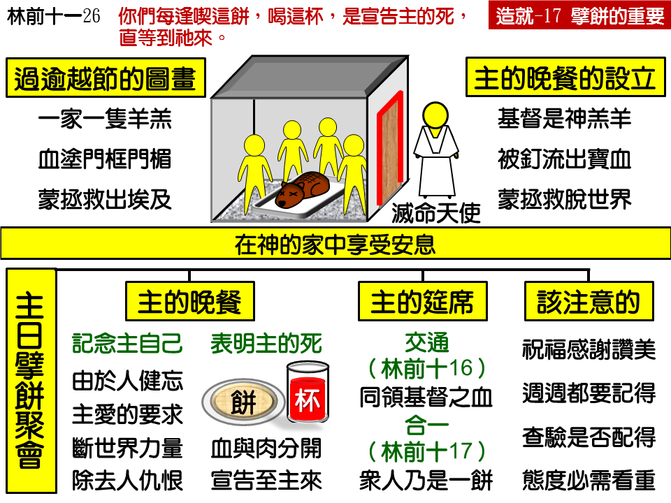

诗歌：177 首、178 首
重要经文：
马太福音二十六章二十六至二十八节：他们吃的时候，耶稣拿起饼来，祝福了，就擘开，递给门徒说，你们拿着吃，这是我的身体。又拿起杯来，祝谢了，递给他们，说，你们都喝这个，因为这是我立约的血，为多人流出来，使罪得赦。
哥林多前书十一章二十四至二十七节：祝谢了，就擘开，说，这是我的身体，为你们舍的，你们要如此行，为的是记念我。饭后，也照样拿起杯来，说，这杯是用我的血所立的新约，你们每逢喝的时候，要如此行，为的是记念我。你们每逢吃这饼，喝这杯，是宣告主的死，直等到祂来。所以无论何人，不配的吃主的饼，喝主的杯，就是得罪主的身体和主的血了。
哥林多前书十章十七节：因着只有一个饼,我们虽多,还是一个身体，因我们都分受这一个饼。
纲目要点：
壹 主的晚餐的设立——太二六26~28：
一 吃逾越节的羊羔之后设立的——太二六 17，出十二1~28。
二 吃晚餐是在神家里享受安息。
贰 主的晚餐的意义——林前十一24：
一 记念主－林前十一 24。
二 表明主的死－林前十一 26。
叁 主的筵席的意义——林前十16~21：
一 交通 ——林前十16。
二 合一 ——林前十17。
肆 擘饼聚会该注意的事：
一 擘饼时要注重祝福、感谢、赞美－太二六 26~27，30。
二 周周都要记得在主日记念主－徒二十 7。
三 态度需要不轻视并察验是否配得－林前十一 27~29。
信息选读：
主的晚餐的设立
主耶稣将要离开世界的那一晚，正是吃逾越节羊羔的时候。当主耶稣和祂的门徒在吃逾越节羊羔之后，主立刻接下去设立祂自己的晚餐。主在这里就是有意给我们看见，要我们吃祂的晚餐，像犹太人吃逾越节的羊羔一样。
我们把这两件事对照一下：以色列人是被拯救脱离埃及，所以守逾越节；神的儿女也是蒙拯救脱离世界的罪恶，所以来吃主的晚餐。以色列人有羔羊，我们也有羔羊－主耶稣是神的羔羊。今天我们已经脱离了世界的罪恶，已经脱离了撒但的权势，已经完全归于神，所以我们要吃主的晚餐，像犹太人吃逾越节的羊羔一样。
晚餐是什么意思呢？晚餐的意思就是一天的工作已经完毕，一家人在一起安心的吃一餐，不像吃早餐、吃午餐那么匆忙，而是安安逸逸的吃饭，满有安息的味道。神的儿女们吃主的晚餐，也当有这一种的心情，不是在那里忙乱，也不是在那里思想要作这个、要作那个，而是在神的家里享受安息。
主的晚餐的意义－记念主
虽然我们所得着的恩典是这么大，我们所得着的救赎是这么奇妙，但是经验告诉我们，人是会忘记祂的。初信的弟兄姊妹，虽然刚刚得救，但是稍不小心一点，也会忘记主的拯救。所以，主在这里特别对我们说，“你们要如此行，为的是记念我。”主要我们记念祂，不只因为我们会忘记，也因为主自己需要我们记念祂。换句话说，主不愿意我们忘掉祂。
祂要我们活在这里的时候不忘记祂，祂愿意我们一个礼拜过一个礼拜的一直活在祂面前，一直记念祂。好叫我们在这里得着属灵的好处。主要我们记念祂，这是祂爱的要求。因为我们如果不是常常记念主，常常把主的救赎摆在我们面前，我们就很容易与世界的罪恶调和，也很容易在神的儿女中起争执，我们所受的损失就非常大，所以主要我们记念祂。我们若记念祂，我们就能得着好处。这也是蒙恩的方法之一，我们能从这里面接受主的恩典。
许多人懒惰不结果子，是什么缘故？是因为忘记了他旧日的罪已经得了洁净。（彼后一 8～9。）所以主要叫我们记念祂，爱祂，常常记念祂。要记念这杯是用祂血所立的新约，是为我们流出来的，这饼是祂的身体，为我们舍去的。这是我们擘饼所
主的晚餐的意义－表明主的死
这饼和这杯，为什么是表明主的死？因为血本是在肉里面，血和肉分开，就是死。你看见这杯里的酒，你就看见血；你看见这饼，你就看见肉。主的血在一边，主的肉在另一边，血和肉分开了，这就表明主的死。在这个聚会中，你不必告诉人说“我们的主替你死了，”他只要看见血不在肉里面，就知道这是死。
主的晚餐是叫我们记念祂自己，盼望弟兄姊妹们从起头就看见祂自己。人记念主自己，自然而然就会记念主的死。人记念主的死，人的眼睛自然而然就望着国度－有一天主要来，主要接我们到祂那里去。十字架总是引到再来，十字架总是引到荣耀。我们记念主的时候，总是要仰起头来说，“主，我要见你的面；当我见主面的时候，这一切都要过去。”主要我们记念祂，一直表明祂的死，宣告祂的死，直等到祂来。
主的筵席的意义是交通与合一
主的筵席的第一个意义是交通。“我们所祝福的杯，岂不是同领基督的血么？”我们岂不是一同喝主的杯么？这是交通。林前十一章乃是说信徒与主的关系，而十章乃是说信徒与信徒彼此的关系。晚餐乃是我们记念主，筵席乃是我们彼此交通。筵席乃是说，“我们所祝福的杯，岂不是同领基督的血么？”这里着重的点，不是在领基督的血，而是在同领基督的血。这一个“同领”，就是交通。
所有神的儿女都是合一的，像这个饼是一个饼一样。我们只有一个饼，你擘了一点吃，他擘了一点吃，我们各人所擘来吃的那一点，假定能收得回来，岂不仍然是一个么？虽然这一个饼是分散在各人里面，但是在圣灵里仍旧是一个饼。基督像饼一样，本是一个。神分一点的基督给你，神也分一点的基督给他，一位的基督现在散住在许多人的心里。基督是属灵的，虽然是分了，却又是没有分的，祂仍旧是一位。神把基督给你，神把基督给他，可是基督在圣灵里还是一位。分开的饼，在圣灵里仍然是一个，并没有分。神的儿女去擘饼的时候，不只去记念主，不只去表明主的死，不只和神的众儿女有交通，并且承认神的众儿女是合一的。这一个饼，就是代表神的召会是合一的。
主的筵席的基本问题，是饼的问题。这个饼是非常紧要的。这个饼，大而言之，乃是代表所有神的儿女，小而言之，乃是代表在一个地方所有神的儿女。如果有几个神的儿女聚集在一起，他们只看见他们几个人，他们的饼只包括他们几个人，那一个饼就太小，就不够。一个饼必须能代表一个地方神的儿女，必须能代表在一个地方的召会；还不只，这一个饼，乃是包括神所有在地上的儿女。我们必须看见，这一个饼表明神的众儿女的合一。如果什么地方有筵席，而他们不能说“我们虽多，仍是一个饼”，我们就不能擘那一个饼，因为那不是主的筵席。
擘饼聚会该注意的事
吃的时候，最要紧的是配。这不是说人配不配，而是说态度配不配。如果一个人是属主的人，就不成问题。他若不是主的人，他就根本不能去擘饼。我们领受这一个身体的时候，如果随便的吃，不分辨是身体，那就不应该。所以，主要我们省察。虽然我们这个人是没有问题了，但我们在那里吃的时候，要知道这是主的身体。我们的态度不可马虎，不可随便，不可轻看，不可放松。我们在这里要作得与主的身体相配。主是把祂自己的血和肉给了我们，我们应当虔诚的接受，虔诚的记念主。
课程复习：
一 是谁设立了擘饼聚会？擘饼聚会设立的背景又是什么?
二 为什么擘饼聚会称为主的晚餐？其意义为何?
三 为什么擘饼聚会称为主的筵席？其意义为何?
四 我们来到擘饼聚会时该注意哪些事？
